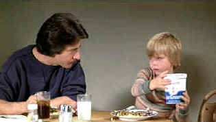

| Kramer
vs. Kramer/A,A- |
| Columbia/1979/105/ANA 1.85 |
I forgot
how beautifully Kramer vs. Kramer explores the human heart. There is so much honesty and humanity in the film. Various relationships in the film
resound with the ring of
truth. There are few short-cuts taken to hype the story. The change in Hoffman’s ad man Ted
Kramer is at
first prompted by necessity and seamlessly shifts to change born on a wave of overpowering love. Many scenes are
exhilaratingly spontaneous, no doubt owing to some insightful improvising.
Kramer vs. Kramer examines the break-up of a marriage and a family
with tasteful veracity. Ted Kramer is a typical young workaholic driven to succeed in his
advertising job and oblivious to problems brewing at home. The guy loves his family. At what just
may be the high point of his career, Kramer's world collapses around him. Sounds like the stuff of
sappy drama, but through writer/director Robert Benton's eyes the film is soothingly lined with
humor.
 |
| Ice cream inspiration.. ©Columbia |
Director Robert Benton does an outstanding job of capturing the rhythms of
New York City without sacrificing his film to petty base travel instincts. Pacing of the film never
lags.
Hoffman is a wonderful Ted Kramer. Character parts are part and parcel of
the Hoffman genius. His exploration of Kramer is consistently on target. Meryl Streep probes the depths of her
character with typical intensity. There’s thought behind every moment. The scenes between her and
Hoffman are consistently amazing. Jane Alexander is a reassuring presence as divorced neighbor
Margaret Phelps. Then, there’s the little kid, Justin Henry. He’s adorable and
bonds beautifully with Hoffman.
Kramer vs. Kramer won Academy Awards© for Best Picture, Best Actor for
Hoffman, Best Supporting Actress for Streep and Best Screenplay and Director for Benton.
Kramer is a terrific
looking DVD. The colors are dead on accurate. Some scenes are not focused sharply, but I think it
was the fault of the focus puller. Choosing takes between perfect focus and perfect performance,
Benton elected willingly sacrificed visual sharpness to emotional acuity. Depth is outstanding throughout the DVD. Excellent
black levels and fine duplication of various lighting schemes. Facial tones are natural. Production
design elements live in perfect harmony with cinematographer Nester Almendros' lighting.
Finding the Truth: The Making of Kramer vs. Kramer is an outstanding documentary
accompanying the film presentation. Mainly talking heads of Benton, Hoffman, producer Stanley
Jaffe, Streep and Alexander, the recollections add up to a fine picture of the project.
|
|
|
|

Charade/A,B

Successfully combining romantic comedy and suspense is no small achievement. Charade does it
with panache.


The
Movie Poster Archive includes extensive poster images from the films of stars like Susan Hayward,
Kirk Douglas, Katharine Hepburn and many more. Our featured star is Errol Flynn.

Selections from the Feature Archive
include articles on Akira Kurosawa, Frank
Darabont, Blonde Bimbos, Hollywood Street Gangs, or Vietnam: The
Hollywood Pariah, and many more....
Capturing Kennedy

Steven Culp extracts the
essence of Robert F. Kennedy in Roger Donaldson's outstanding feature Thirteen Days. Culp recently shared
insights on the performance and his career with Films on Disc. Click the image for more.

|